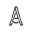

Roteiro Criativo
Fluxo de Trabalho Padrão - Marca Independência
01. Concepção e Modelagem
Definir o Croqui Inicial
Identificar se é Residencial, Comercial, Rural ou Reforma isolada.
Desenho no SketchUp
Modelar a base fictícia, tirar medidas reais e criar as marcações na planta baixa.
Transformação 3D e Mobiliário
Elevar o projeto e inserir os objetos/produtos que serão vendidos via afiliados.
02. Visualização com IA
Renderização via IA
Processar o arquivo para definir cores, texturas e iluminação realista.
Exportação de Ativos
Gerar as imagens finais em alta resolução para o Canva e para o site.
03. Produção Audiovisual
Montagem no Canva
Definir formato (Reels/YouTube), selecionar faixas de áudio e organizar as cenas.
Roteiro e CTA
Escrever e gravar a chamada para ação direcionando para o seu domínio.
Prova Visual do Site
Tirar prints/fotos do site com a planta disponível para gerar confiança no vídeo.
04. Empacotamento e Venda
Criação dos PDFs Técnicos
Organizar as pranchas que serão entregues na Hotmart (PDF/DWG).
Configuração Hotmart
Subir arquivos, definir preço e copiar o link de checkout para a Landing Page.
Atualização do Hub (GitHub)
Publicar a nova página de projeto e atualizar o Guia de Compras.